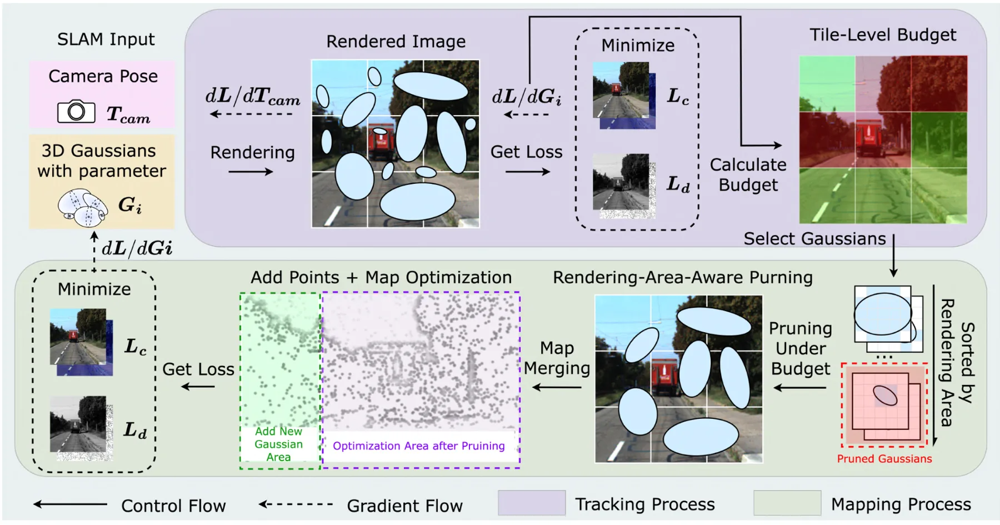
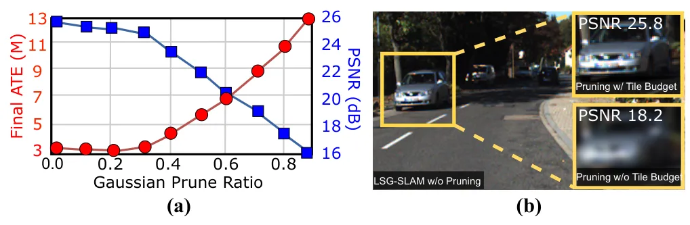
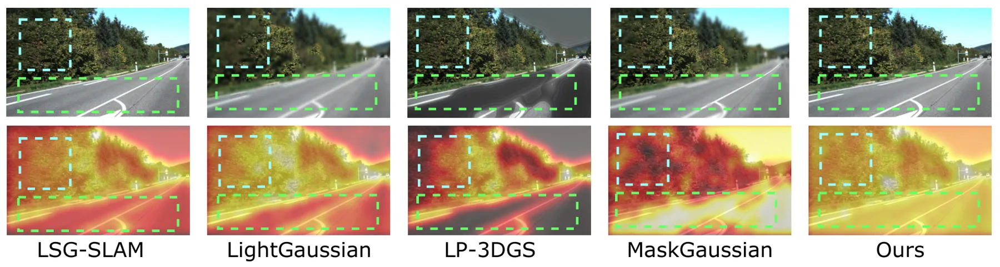
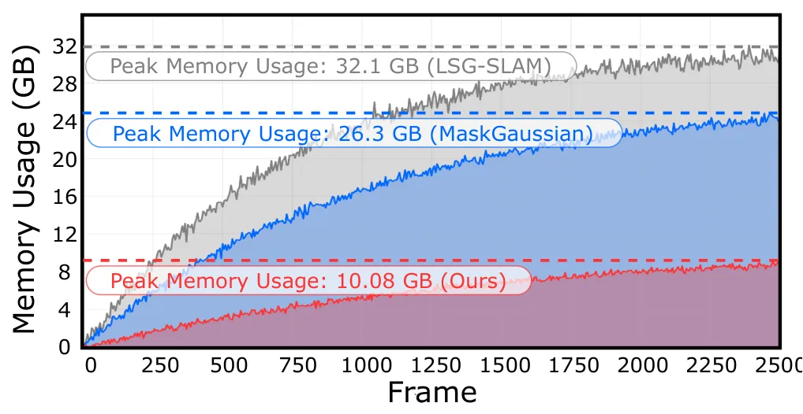
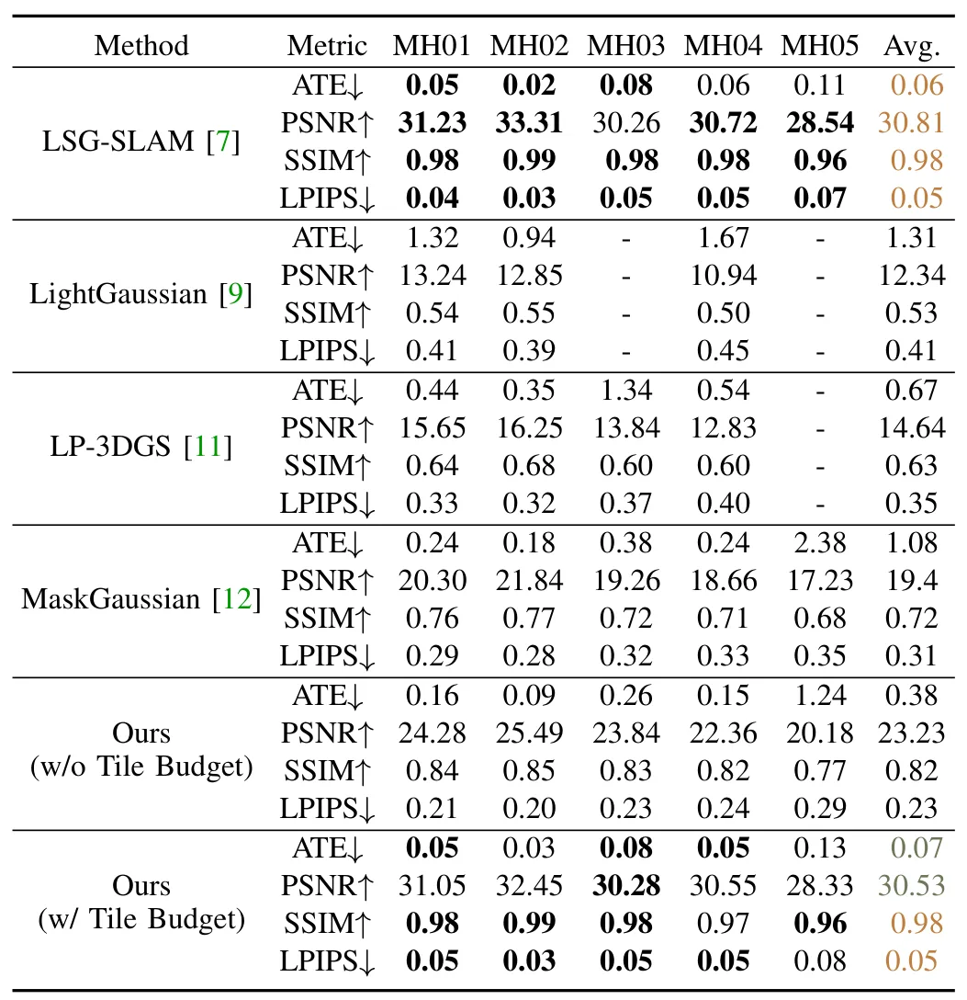
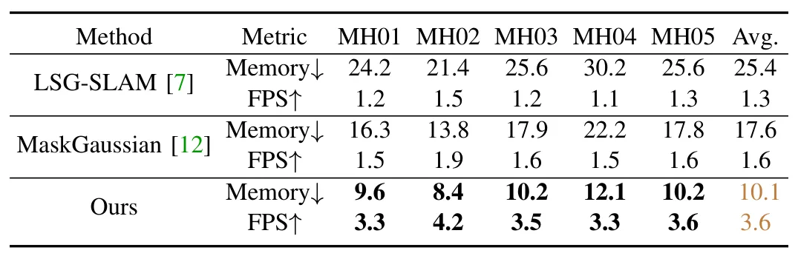
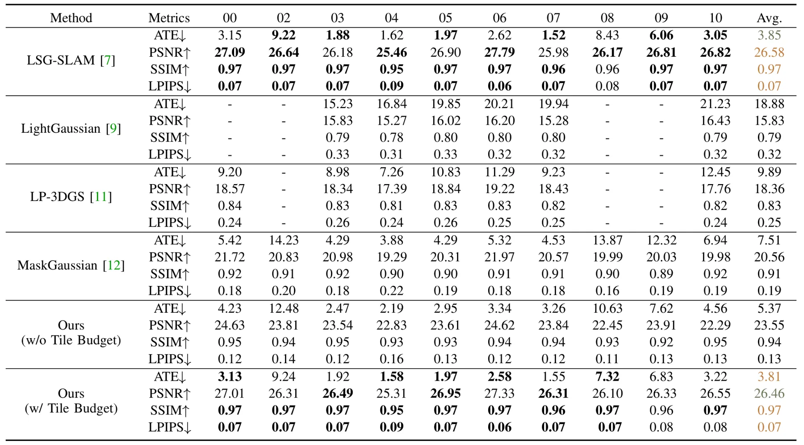
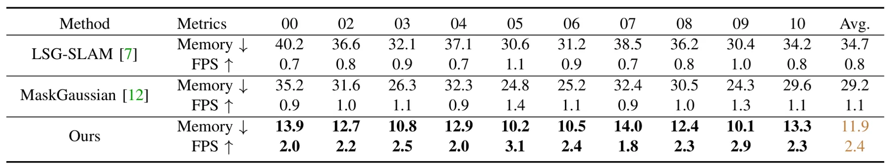

Pocket-SLAM：面向内存高效 3DGS-SLAM 的渲染区域感知剪枝Pocket-SLAM: Rendering-Area-Aware Pruning for Memory-Efficient 3DGS-SLAM
直接命中 3DGS-SLAM 在大尺度/自动驾驶场景中的内存增长痛点，实验指标清晰且声称开源；后续需复核实时剪枝开销、长期地图维护和回环场景下的稳定性。
一句话工作总结
用对有效渲染区域的贡献来剪枝高斯点，在保持 3DGS-SLAM 精度的同时显著降低运行内存并提升帧率。
摘要
3D Gaussian Splatting 已被广泛用于 SLAM 中的细粒度几何表示和新视角渲染，但在大尺度场景中，高斯点会随时间不断积累，导致峰值内存持续上升并限制实时部署。Pocket-SLAM 提出 rendering-area-aware pruning：不再只依赖 opacity、gradient magnitude 等单个高斯层面的启发式，而是根据高斯对有效渲染区域的贡献来选择性删除冗余点。作者在 EuRoC 和 KITTI 上评估，报告在保持定位与建图精度的同时，获得超过 60% 的内存降低和 2 倍以上 FPS 提升，并已给出公开代码地址。
3D Gaussian Splatting (3DGS) has garnered significant attention in Simultaneous Localization and Mapping (SLAM) due to its advances in capturing fine-grained geometry features and synthesizing novel views. For SLAM in large-scale scenes, such as autonomous driving, 3DGS-SLAM faces a critical limitation: memory consumption increases continuously over time as Gaussian points accumulate, leading to poor memory efficiency and limiting its applicability. In this work, we propose a rendering-area-aware pruning strategy that selectively removes Gaussians based on their contribution to the effective rendering area, rather than solely relying on Gaussian-level heuristics such as opacity or gradient magnitude. This perspective directly targets the sources of memory redundancy, effectively reducing the peak memory footprint of 3DGS-SLAM during runtime. Evaluations on the EuRoC and KITTI datasets demonstrate that our method consistently outperforms existing pruning approaches in large-scale outdoor scenes, achieving over 60% memory reduction and more than 2 times FPS improvement while preserving localization and mapping accuracy. These results highlight rendering-area-aware pruning as a promising direction for scaling 3DGS-SLAM to real-world autonomous driving scenarios. Our code is publicly available at https://github.com/UMN-ZhaoLab/Pocket-SLAM.git.
中文解读摘录
- 英文题名：Pocket-SLAM: Rendering-Area-Aware Pruning for Memory-Efficient 3DGS-SLAM
- 作者：Leshu Li, Jie Peng, Yang Zhao
- 类别/来源：cs.CV；comment: 2026 IEEE International Conference on Robotics and Automation (ICRA)；采集 score=17；阅读优先级=9.3/10。
- 一句话总结：用“对有效渲染区域的贡献”而不是单点 opacity/gradient 启发式来剪枝高斯，在保持定位/建图精度的同时显著降低 3DGS-SLAM 运行内存。
- 为什么值得看：这是今天最贴近 SLAM 主线的工作，直接面向大尺度/自动驾驶场景中 3DGS-SLAM 高斯点持续累积的问题；摘要报告 EuRoC/KITTI 上超过 60% 内存降低和 2 倍以上 FPS 提升，且给出了开源仓库地址。后续应复核其 pruning 触发策略、实时开销、对回环/长期地图维护的影响，以及和现有 keyframe/visibility 管理的关系。
- 标签：3DGS-SLAM、内存剪枝、实时建图、自动驾驶
- 链接：abs / PDF
图表/页面预览

{kind=link}

{kind=link}

{kind=link}

{kind=link}

{kind=link}

{kind=link}

{kind=link}

{kind=link}
